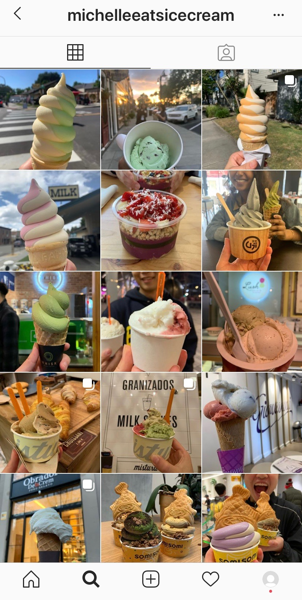
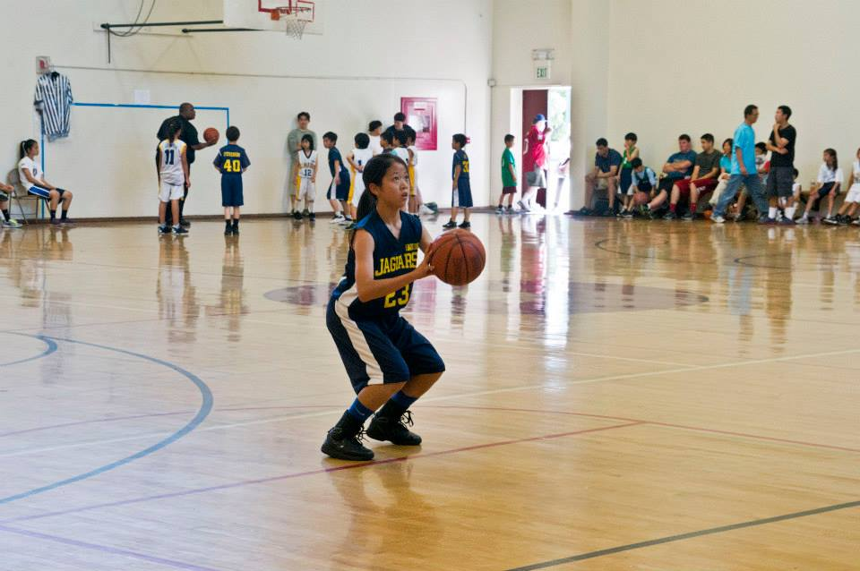
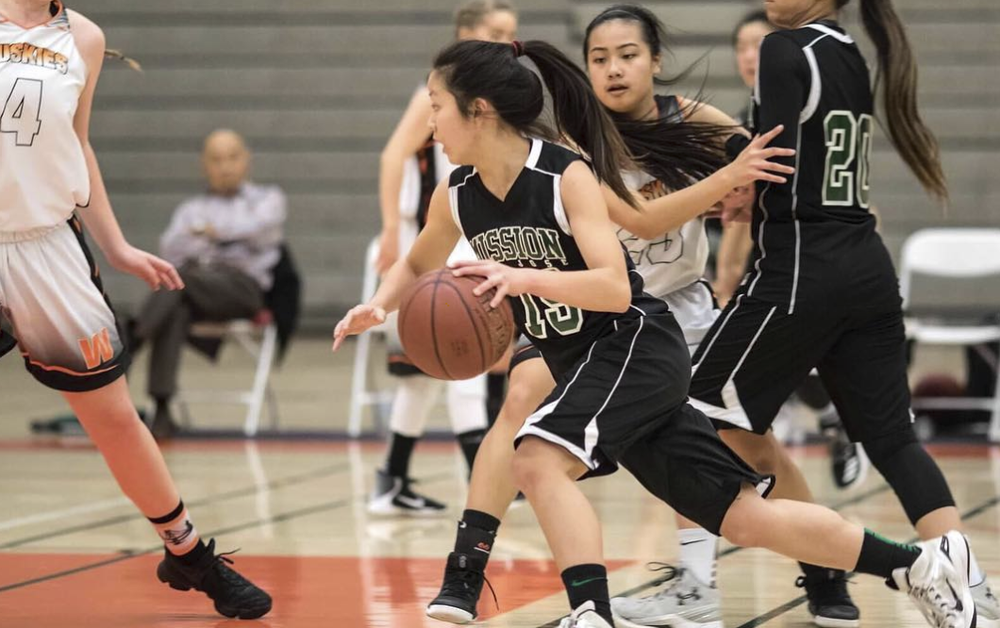

random
hello! you're either here because you made a wrong click or you think i'm kinda interesting
and want to learn a bit more than where/what i study and my professional interests. ¯\_(ツ)_/¯
if not feel free to navigate to another page!
doodles
i really enjoy doodling and creating digital art! i'm not very proficient with adobe
illustrator/sketch but sometimes i'll sit down for a couple of hours and play around
with different tools/features

this was super fun to make but it doesn't look like me at all...
hover over me to see the original photo!
a similar type of drawing but this is a picture from when i visited spain!
once again, it doesn't really look like me haha....
summer 2020 reads
in elementary school, i used to spend so much time reading fiction books in my free time.
i remember i'd come home from school and just sit on the couch for hours reading lemony
snicket's a series of unfortunate events or the percy jackson series. since then, i've really
only done readings for my classes : ( . BUT this summer i set a goal for myself to read at
least 5 books of my choice! so this is what i've got for y'all:
- Turtles All the Way Down by John Green
- Crazy Rich Asians by Kevin Kwan
- Finding Chika: A Little Girl, an Earthquake, and the Making of a Family by Mitch Albom
- A Thousand Splendid Suns by Khaled Hosseini
- When Breath Becomes Air by Paul Kalanithi
ice cream
i LOVE ice cream check out this homemade matcha ice cream i made with my friend.

i also have an instagram account where i keep track of my ice cream crawl : )

@michelleeatsicecream
top 3 ice cream spots in the bay area:
- tin pot creamery
- garden creamery
- sf hometown creamery
basketball
i've been playing basketball since 5th grade and i would honestly say that it played
the largest role in my character development. there's so much to learn from the game
and it's a great way to meet new people : ) i don't play nearly as much as i used to
but catch me at berkeley's recreational sports facility once in a while!


top 3 lessons i've learned from basketball

- it's a mental game. what does "it" refer to? nearly everything and anything
- ball security is job security
- understanding both the high level overview and paying attention to details is key